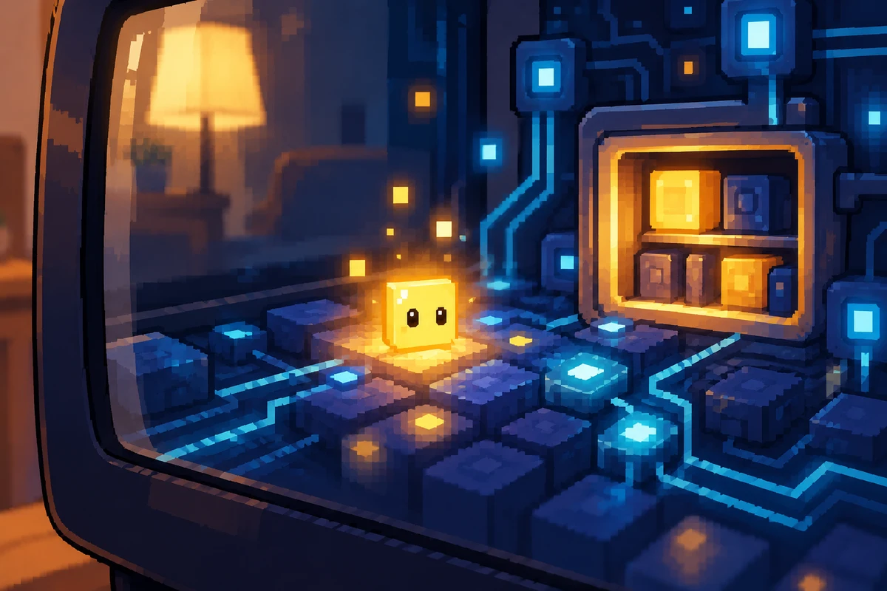

ROZPRÁVKA PRVÁ
AKO VZNIKLI PIXELKOVIA
O prvej svetelnej bodke a domove za obrazovkou
Približne 6 min čítania · podľa tempa rodiny
Keď sa v byte ráno rozsvieti televízor, nikto sa veľmi nečuduje. Na obrazovke sa objavia farby, niekto si pustí rozprávku a v kuchyni zacinká lyžička o šálku. Po chvíli sa rozsvieti aj telefón, na tablete sa otvorí obrázok a počítač zažmurká malou kontrolkou. Pre ľudí je to celkom obyčajný deň.
Lenže medzi tými maličkými svetelnými bodkami sa skrýva čosi, čo ľudské oči nedokážu zazrieť. Za obrazovkami je zvláštny drobný svet. Nie je vnútri skla ako chrobák v pohári. Je ukrytý v rozprávkových cestičkách obrazov, zvukov, správ a spojení. To, čo človek vidí ako jediný záblesk, môže byť v tomto svete celou ulicou svetla.
Nikto presne nevie, kedy sa tam objavil prvý Pixelko. Najstaršia povesť rozpráva o zlatej bodke, ktorá zostala svietiť o okamih dlhšie než ostatné. Stalo sa to dávno, keď na jednej obrazovke prebehol jasný obrázok. Ostatné body sa rozsvietili a zhasli presne podľa neho. Len jeden sa akoby zamyslel. Obzrel sa doľava, potom doprava a prvý raz zbadal, že okolo neho vedú tenké cestičky.
Bodka ešte nemala meno. Nevedela rozprávať a nemala komu zamávať. Dokázala však zasvietiť. Raz slabšie, raz silnejšie. Pomaly objavovala, že keď sa rozsvieti pri jednej cestičke, na jej druhom konci sa môže objaviť odpoveď. Nebola to odpoveď vyslovená ústami. Bol to maličký záblesk, ktorý akoby vravel, že niekde ďaleko nie je sama.
A tak sa zlatá bodka vydala na svoju prvú cestu. Prechádzala popri rade modrých štvorčekov, obchádzala tmavé okienka a opatrne vstupovala na úzke svetelné mostíky. V jednom mieste objavila jemné chvenie, ktoré pripomínalo zvuk. Inde sa mihol krátky odkaz. A ešte ďalej sa stretli dve cestičky, hoci každá prichádzala z inej časti zariadenia.
Svet za obrazovkou zrazu nebol taký prázdny. Všade sa ukrývali malé možnosti: niečo rozsvietiť, niečo preniesť, niečo spojiť. Tam, kde sa svetlo stretávalo so zvukom alebo sa jedna cesta dotkla druhej, začali sa postupne prebúdzať ďalší drobní obyvatelia. Každý bol trochu iný. Jeden pripomínal hladký štvorček, ďalší maličkú súčiastku, iný záblesk alebo kúsoček správy.
Neboli to však maličkí ľudia, ktorí by sedeli vo vnútri obrazovky. Všetko fungovalo rozprávkovo: keď niekto na tablete posunul obrázok, v ich svete prebehla farebná vlna. Keď sa uložila fotografia, na chvíľu sa rozsvietila malá pamäťová komôrka. A keď sa z telefónu odoslal odkaz, po tenučkom spoji sa pohol svetelný balíček. Tieto udalosti ľudia bežne nevidia, pretože sa odohrávajú prirýchlo a na príliš malých miestach. Pre prvých Pixelkov však každá z nich znamenala novú krajinu, ktorú sa dalo preskúmať. Ich svet nebol postavený z tehál. Tvorili ho spoločné úlohy a cestičky, ktoré sa postupne naučili používať.
Prvý Pixelko mal z toho radosť. Už nemusel posielať svetielka do ticha. Na cestičkách pribúdali odpovede a v tmavých zákutiach sa objavovali nové maličké domovy. Lenže práve vtedy prišlo niečo, na čo nikto nebol pripravený.
Večer niekto v ľudskom byte vypol televízor.
Všetky veľké farby z obrazovky zmizli naraz. Ulice svetla potemneli, jasné okná sa zatvorili a prvá zlatá bodka prestala vidieť na cestu. Zdalo sa jej, že ak sa svetlo už nikdy nevráti, stratia sa aj všetci noví kamaráti. Rozbehla sa k miestu, kde sa naposledy stretli, no tam zostalo len mäkké ticho.
Chvíľu sa bála. Potom zbadala takmer neviditeľnú modrú čiaru. Nebola to cesta pre veľké obrázky. Bola to pokojná značka, ktorá zostávala v pamäti zariadenia aj vtedy, keď bolo všetko ostatné stíšené. Vedľa nej našla malý odložený odkaz. Nestratil sa. Iba čakal na ráno.
Zlatá bodka vyskúšala niečo nové. Namiesto toho, aby svietila zo všetkých síl, stlmila svoj jas. Zostala pri uloženom odkaze a počkala. Za chvíľu sa z tmy ozvalo ďalšie tiché svetielko. Potom druhé. A napokon sa pri starej odbočke objavila celá malá skupinka.
Ukázalo sa, že tma za vypnutou obrazovkou nie je koniec sveta. Je to iba odpočinok. Niektoré cesty vtedy zaspia, správy počkajú a Pixelkovia si môžu sadnúť vedľa seba. Nemusia držať ľudský telefón ani televízor zapnutý len preto, aby sa mali kde stretnúť.
Spoločne si pri pokojnej modrej čiare pripravili prvý domov. Nemal veže ani veľké brány. Mal niekoľko maličkých svetelných miest, poličku na odkazy a tiché zákutie pre tých, ktorí sa práve vrátili z cesty. Pri vchode nechali jednu zlatú bodku. Nesvietila preto, aby niekoho budila. Iba pripomínala, že aj v tme možno nájsť cestu k druhým.
Ráno sa televízor opäť rozsvietil. Cestičky ožili, farby sa rozbehli a prvý Pixelko zbadal, že všetci, ktorí večer odpočívali, sú zasa pripravení objavovať. Na druhom konci obrazovky sa deti smiali pri rozprávke. Nemali ani tušenie, že za jej obrazom niekto práve slávi svoje prvé spoločné ráno.
Od tých čias sa maličkí obyvatelia rozrastali s obrazovkami, tabletmi, počítačmi a telefónmi. Postupne dostávali vlastné podoby a schopnosti. A pretože sa ich svet narodil zo svetelných bodiek, začali si hovoriť Pixelkovia.
Nikto už nevie, ktorou zlatou bodkou sa to všetko začalo. Isté je len to, že jej najdôležitejší objav zostal v ich svete dodnes: svetlo je krásne, ale domov vznikne až tam, kde má kto počkať na druhého.